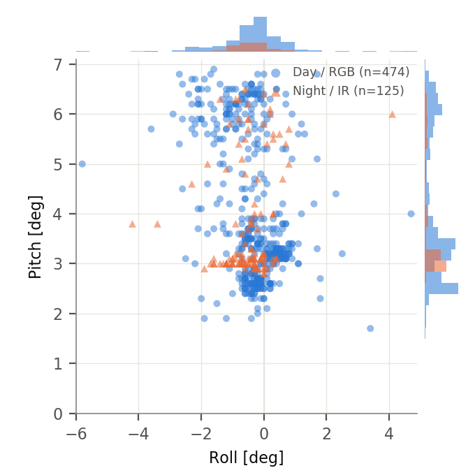
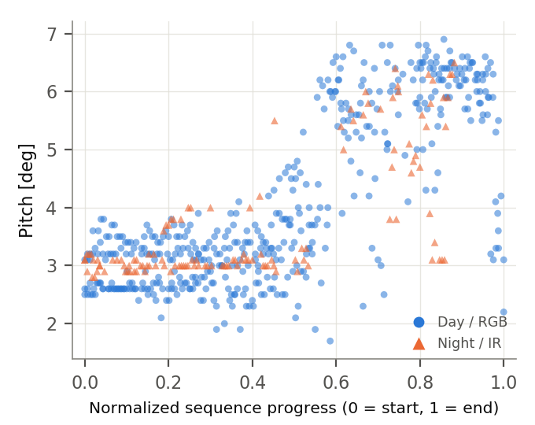
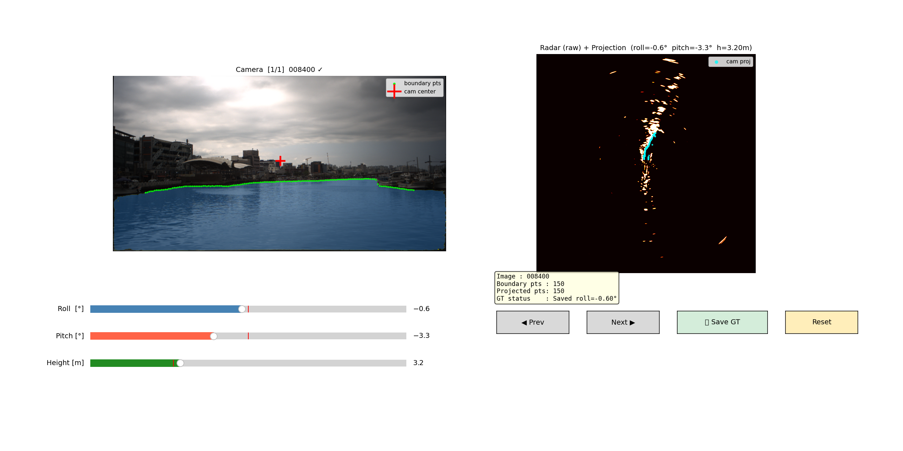

599 manually verified roll / pitch / height reference labels for frame-level camera–radar alignment on autonomous surface vessels, across daytime RGB and nighttime IR sequences.
Mechanical Engineering, KAIST — OCEANS 2026
Camera and marine radar are complementary sensors for autonomous surface vessels, but effective fusion requires accurate frame-level geometric alignment — a challenge in maritime environments where the platform is continuously affected by wave-induced roll and pitch motion. Attitude and heading reference system (AHRS) and SLAM-based trajectory estimates provide useful priors, but may not yield the roll/pitch that maximizes camera–radar projection consistency.
CRAD provides human-verified roll, pitch, and height reference labels for visually inspectable camera–radar frames from the Pohang Canal Dataset, generated with a custom projection-based annotation interface where an annotator adjusts roll/pitch/height while checking cross-modal consistency between image-domain cues and radar-domain structures.
CROCS (Camera–Radar Online Alignment via Conic-Section-Constrained Scalar Field Correlation), published in IEEE Robotics and Automation Letters, is a follow-on algorithm paper from the same authors that evaluates against these labels. If you use it, please cite it — see Citation.
| Sequence | Type | Time range [s] | # Labels |
|---|---|---|---|
| pohang00 | Day / RGB | 580–2170 | 116 |
| pohang01 | Night / IR | 690–2640 | 83 |
| pohang02 | Day / RGB | 840–2240 | 110 |
| pohang03 | Day / RGB | 800–2420 | 140 |
| pohang04 | Day / RGB | 650–2200 | 108 |
| pohang05 | Night / IR | 470–2170 | 42 |
| Total | – | – | 599 |


annotator/annotate.py is the actual interface used to
produce every label in this dataset, included so the labeling
methodology is fully reproducible — not just described in prose.

pohang03, frame 008400 (roll=-0.6°, pitch=-3.3°, height=3.2 m, already saved). Left: camera image with the SAM3-derived water boundary. Right: the same boundary projected onto the raw radar image, aligning with the radar-observed structure.Each sequence's labels are stored as labels/pohang0#/gt_rph.json:
{
"5800": {"roll_deg": 0.3, "pitch_deg": 2.6, "height_m": 3.5},
"5900": {"roll_deg": -0.1, "pitch_deg": 2.6, "height_m": 3.3}
}...plus a consolidated labels/gt_labels.csv across all six sequences. A minimal loader and plotting example (no dependency beyond pandas/matplotlib) are included in examples/:
python examples/load_labels.py --seq pohang03
python examples/plot_distribution.pyThe manual annotation tool used to produce every label (annotator/) is also included, with no dependency on the authors' private CROCS codebase. This repository does not ship the underlying camera images or radar scans — those belong to the Pohang Canal Dataset and must be obtained separately. See the full README for the annotation protocol, sign-convention notes, and license details.
@inproceedings{han2026crad,
title = {{CRAD}: Camera-Radar Alignment Dataset for Maritime Sensor Fusion},
author = {Han, Sol and Kim, Jinwhan},
booktitle = {OCEANS 2026},
year = {2026}
}CROCS is a follow-on algorithm paper from the same authors. If you use it, please cite:
@article{han2026crocs,
title = {{CROCS}: Camera-Radar Online Alignment via Conic-Section-Constrained Scalar Field Correlation},
author = {Han, Sol and Kim, Jinwhan},
journal = {IEEE Robotics and Automation Letters},
year = {2026},
doi = {10.1109/LRA.2026.3730370}
}IEEE Xplore · DOI: 10.1109/LRA.2026.3730370
Please also cite the Pohang Canal Dataset if you use the underlying camera/radar frames.